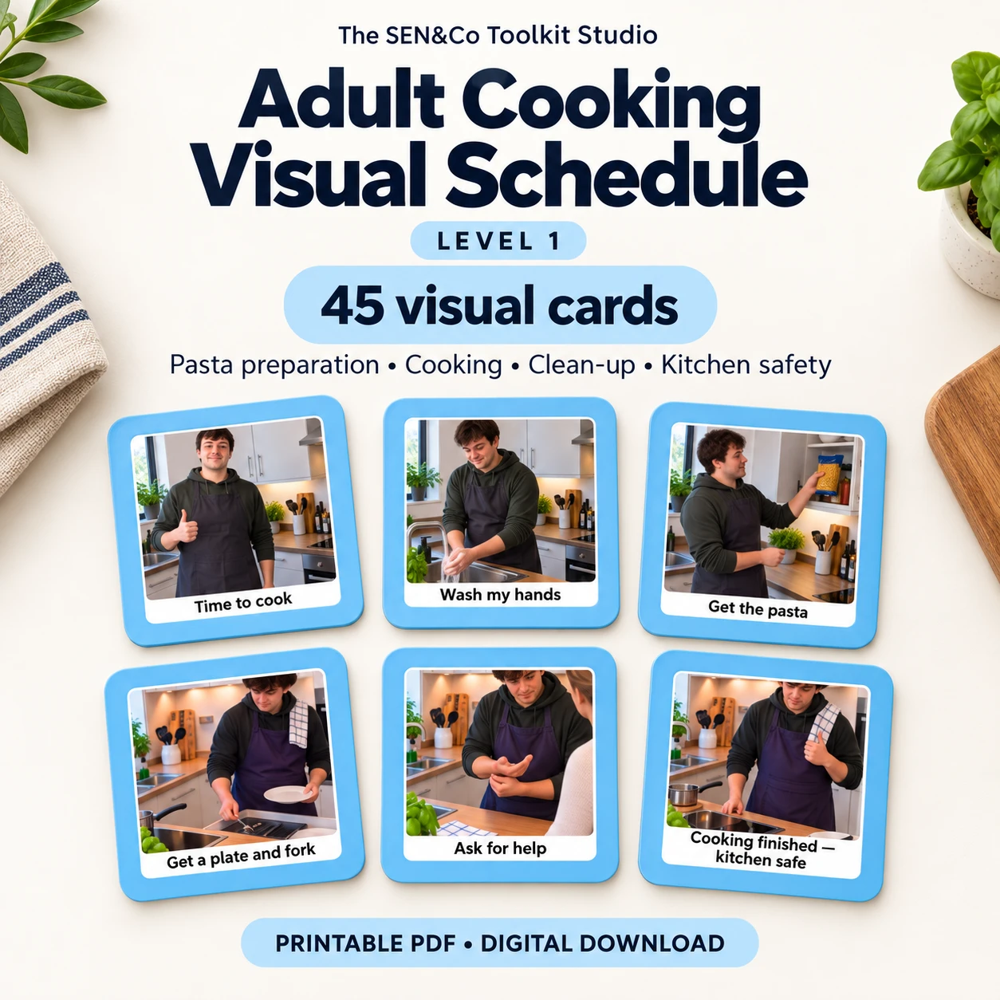

Follow a familiar routine
Prompts for washing hands, gathering equipment, cooking pasta, setting a timer, adding sauce and serving.

Examples from the 45-card set. Digital download; no physical cards are shipped.
COOKING & INDEPENDENCE
Level 1: Pasta · 45 realistic visual cards
US$9.99 Digital download
Make a familiar cooking routine easier to follow, one step at a time. Clear photographs and short written prompts cover preparing pasta, serving a meal, cleaning up and asking for help.
Ready to download
Buy now — US$9.99Continue to our Payhip checkout to purchase and download your files.
PDF and PNG versions contain the same 45 cards.
ONE STEP AT A TIME
Choose the prompts that suit the individual and their agreed level of support.
Prompts for washing hands, gathering equipment, cooking pasta, setting a timer, adding sauce and serving.
Visual steps for washing and drying dishes and putting equipment away.
Additional prompts for turning off the hob, avoiding a hot pan, cleaning up spills and getting support.
Five download files: one A4 card-set PDF, three PNG ZIP folders (cards 1–14, 15–30 and 31–45), and an Instructions & Thank You PDF. No physical item is shipped.
Adults who find visual prompts helpful, including neurodivergent adults, and carers or support workers supporting everyday cooking routines.
Print the A4 PDF at Actual Size / 100%, cut around the blue borders and laminate if preferred. Individual PNG files offer another way to arrange cards in your chosen layout.
Select a few useful steps or arrange a longer sequence. Follow one card at a time and move completed cards aside. Allow processing time, offer choices and adapt the routine to the person's needs.
These cards support routines and communication. They do not replace cooking instruction, an individual assessment of support needs or appropriate supervision around heat, sharp tools and hot water.
{kind=link}
{kind=link}
{kind=link}
{kind=link}
{kind=link}
{kind=link}